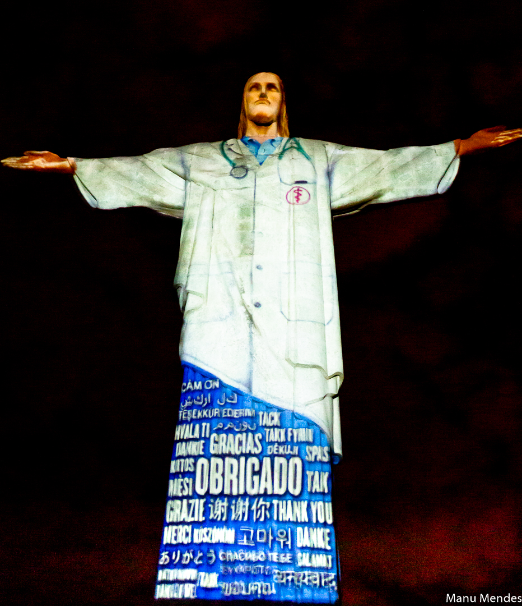

Abraço
de Pascoa
no Cristo

No domingo de páscoa mais emblemático das últimas décadas, a LEVE e a Agência Novo Traço deram um abraço inesquecível em todos os profissionais de saúde que atuam na linha de frente no combate a Covid – 19. Um show de projeções com uma trilha musical poderosa, vestiu o Cristo Redentor com um jaleco médico e durante quinze minutos exibiu fotos e vídeos de profissionais de saúde com mensagens de agradecimento a eles. Bandeiras de 195 também foram projetadas com a palavra Esperança em todas as línguas. A ação foi transmitida ao vivo pela internet e teve uma repercussão imensa não só no Brasil, mas em vários jornais e TVs no mundo inteiro. O Abraço de Páscoa no Cristo fez parte do movimento Formou Esperança idealizado pela faculdade Estácio de Sá e arrecadou doações para várias instituições que apoiam famílias vulneráveis durante a pandemia.
Ficha técnica:
Criação: ZÉ RICARDO e RAFAELLO RAMUNDO
Apoio e colaboração criativa: EDUARDO GUEDES
Projeções: DADO MARIETTI
Trilha Sonora das projeções: MAURÍCIO PIASSAROLLO e ZÉ RICARDO
Direção de produção: Fabiane Costa
Direção Artística: ZÉ RICARDO
Realização: NOVO TRAÇO
Gilberto Gil
e Isa - Live
Zé Ricardo recebeu de Tom Gil, diretor de negócios da W/McCann, o desafio de criar para a Mastercard um encontro que não tivesse preço. Assim nasceu a Live “AS CANÇÕES DE GILBERTO GIL POR IZA E GIL”. Pudemos ouvir canções belíssimas de um dos maiores compositores do mundo, ícone da nossa MPB, na voz de Iza. Acompanhada por Gil ao violão e José Gil na percussão Iza passeou por uma hora na obra de Gil. Com uma fotografia delicada e excelente qualidade de som, o encontro que emocionou e teve uma repercussão imensa na imprensa. A LEVE assina a realização e produção geral desse show. Contratando além dos artistas, todos os fornecedores envolvidos no projeto. Essa Live foi o lançamento de uma campanha da Mastercard que arrecadou dois milhões de pratos de comida para a ONG Rio Solidário.
Idealização, direção artística e geral - Zé Ricardo
Direção de produção - Fabiane Costa
Diretor técnico - Aurélio Kauffamm
Técnico de som - Jimmy Jr
Técnico de TP - Marcos Almir
Técnico de internet - Rubens Lima
Catering - Adriana Fernandes (Roça Gourmet)
Tradução em libras - Thuani Oliveira e Felipe Oliver
Realização – LEVE CRIAÇÕES